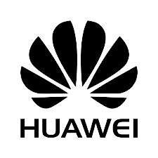

Hello! My name is Oscar Ricaurte
Electromechanical Engineer with emphasis in telecommunications, specialist in project management and professional Scrum Master.
With 23 years of experience in implementation processes and infrastructures of mobile phone sites in Latin America. Focused on financial, administrative and operational processes that lead to the fulfillment of KPIs in each of the projects that I have led.
- 